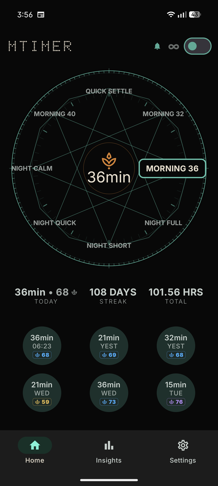
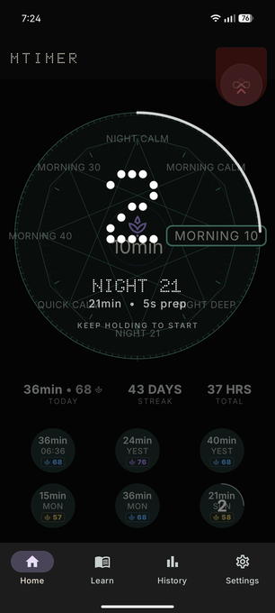
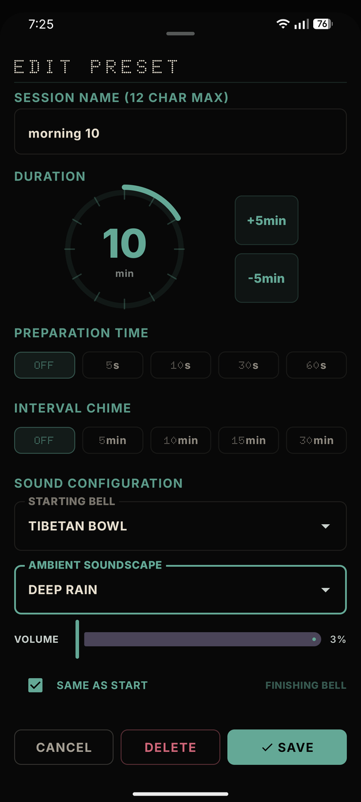
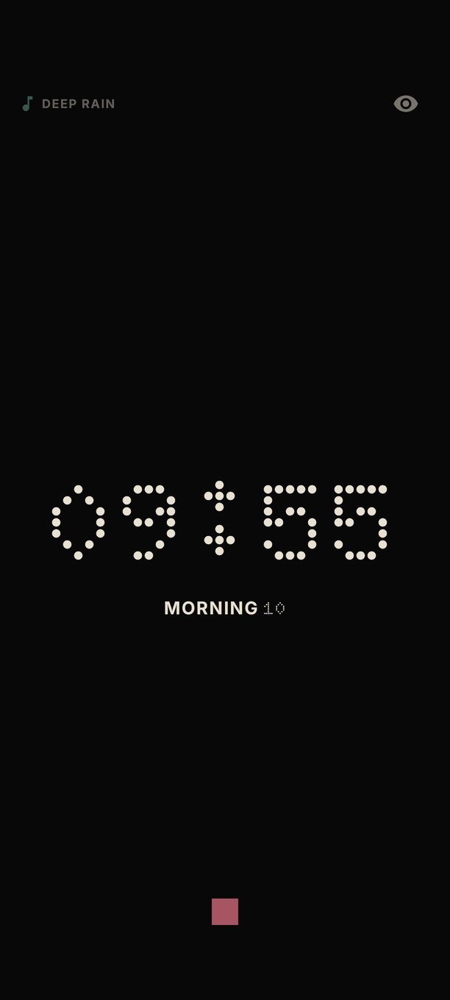
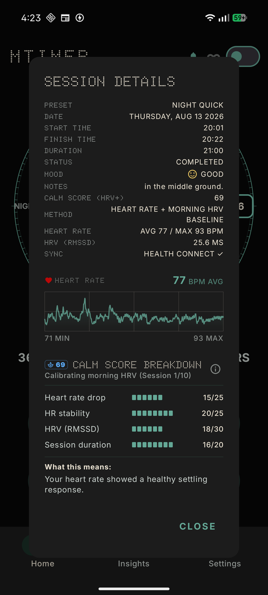
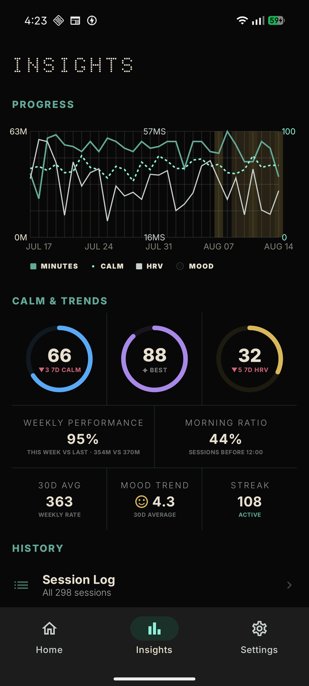
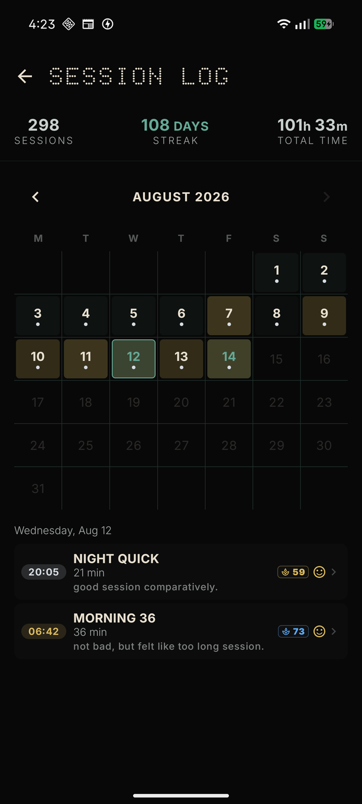
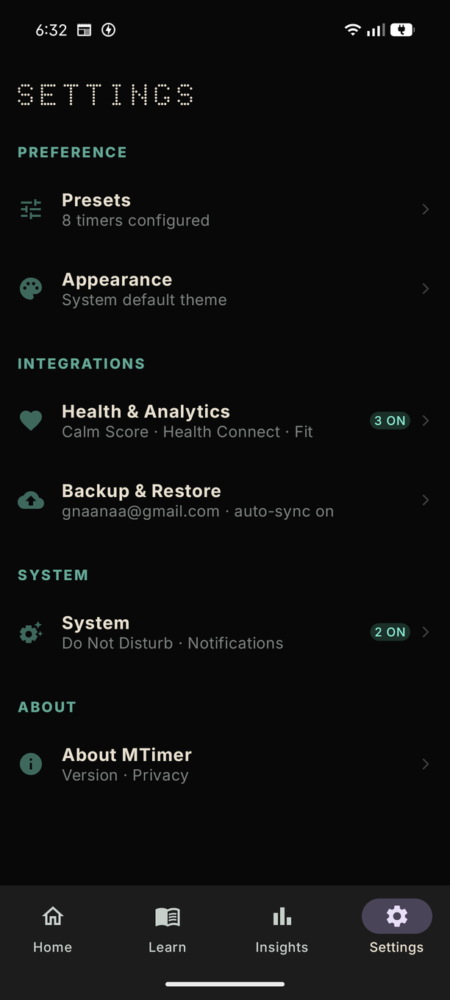
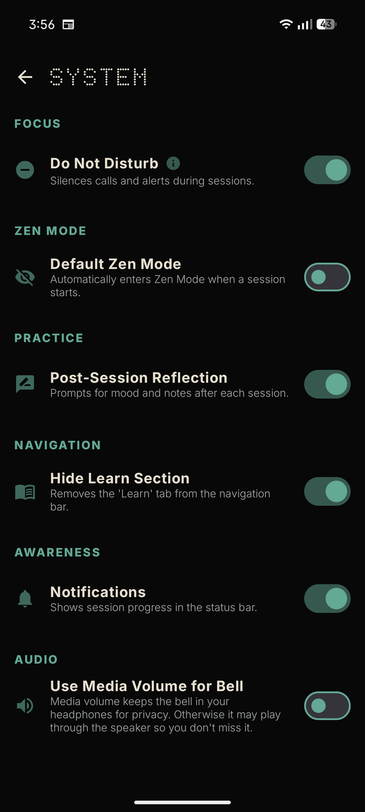

MODEL M.2.6.0 // MEDITATION HUD
MTIMER
[ HIGH-PRECISION MEDITATION INSTRUMENT ]
GET IT ON
Google Play
[ HIGH-PRECISION MEDITATION INSTRUMENT ]
The home screen is the instrument face. Everything you need to start a session is here — no navigation required.
Rotate the dial by dragging — your presets sit as points around the outer ring. The selected preset name appears in the centre pill. The leaf icon shifts colour with the time of day: gold at dawn, blue midday, purple at dusk.
Drag the dial to find your preset
Preset name appears in centre
Tap the centre to start

The six most recent sessions appear as circles below the dial. Hold any circle for three seconds to re-launch that exact session. A circular progress arc counts down during the hold.

Save your most-used configurations — duration, bells, intervals, and ambient sound — as named presets accessible directly on the dial.
Presets are managed from the Presets section in the Settings page. Add, edit, reorder, or delete from one screen.

Once started, MTimer steps aside. The timer screen shows only what you need — and disappears entirely in Zen mode.

The guarded ∞ button in the top-right of the home screen starts a session with no fixed duration. A safety guard prevents accidental activation.
After each session, MTimer reads heart rate and HRV (RMSSD) data from your wearable via Health Connect. It calculates a settling score entirely on your device using a read-only minimum scope approach. Nothing is transmitted externally.
Four metrics, each normalised to your own physiology — not a population average. The score refines as your personal baseline builds across sessions.

Higher tension. The body was working to settle. Common in busy or caffeine-affected sessions.
Moderate settling. The nervous system was engaged but not fully at rest.
Good settling. Heart rate dropped clearly and rhythm was stable.
Deep settling. Strong parasympathetic response. Body and mind genuinely at rest.
Exceptional settling. Rare. Heart rate dropped significantly and held stable throughout.
Your practice data lives in two places — a 30-day Insights dashboard for identifying physiological trends, and a granular Session Log where every session is reviewable in full detail.


Seven methods drawn from classical traditions — written for clarity, suitable for any level. Accessible from the Learn tab in the navigation bar.
Notice the breath without changing it. The foundation of all other practices and the most reliable object of attention.
Sri M's instruction — Hum on the inhale, Sau on the exhale. The breath carries the mantra; no effort required.
Fix the gaze on a candle flame or point. Outer stillness produces inner stillness. Builds one-pointed concentration.
The breath mantra moves with a felt inner pathway through the body. So on the inhale, Ham on the exhale.
Ramana Maharshi's method. "Who am I?" — not a question to answer but a direction to follow inward toward the source of thought.
Nada Yoga from the Nath tradition. Block the outer ears and listen inward — from gross sounds toward the most subtle.
Attention directed toward the Ajna centre — the point between the brows. Requires stable concentration built through earlier practices.
Each method opens as an accordion. Use the jump chips at the top of the Learn screen — BASICS, METHODS, PRINCIPLES, SOURCES — to navigate directly to any section. Only one section is open at a time to maintain focus.
Advanced personalization and platform integrations — from Zen Mode brightness to physiological data sync.
| SETTING | WHAT IT DOES |
|---|---|
| Presets | Add, remove, and reorder your meditation routines. Customize prep time, intervals, and audio for each. |
| App Theme | System default, Light, Dark, or immersive presets like Jungle and Sea. |
| Timer Screen | Choose a retro Digital or minimal Analog clock face, and toggle between Dotted Matrix or Modern Serif typography for your session. Also you can adjust the zen mode brightness here. |
| Health Connect | Syncs mindfulness minutes and heart rate data to Android’s central health hub. |
| Google Fit | Logs sessions to Google Fit for compatibility with insurance and reward programs. |
| Calm Score | Enable to compute physiological settling scores from wearable heart rate data. Processed on-device only. |
| HRV Enhancement | Integrates your morning Heart Rate Variability baseline for a more precise Calm Score calculation. |
| Auto History Sync | Silently backs up every session to your Google Drive (App Data folder) to keep your history safe. |
| Create Backup | Save your entire configuration as a Local file or a Cloud snapshot on Google Drive. |
| Restore Backup | Recover a previous configuration from a Local file or a Cloud snapshot on Google Drive. |
| Sign Out | Disconnect your Google account used for backup and sync. |

| SETTING | WHAT IT DOES |
|---|---|
| Do Not Disturb | Automatically silences calls and notifications at session start. Restores your original state at the end. |
| Zen Mode | Default Zen Mode enters a low-distraction state automatically. Use the Brightness Slider to tune text visibility. |
| Post Session Reflection | Prompts a quick mood log and journal entry when your session ends, so you can capture how you feel in the moment. |
| Hide Learn Section | Clean up your navigation bar by removing the meditation guide section if you prefer a pure timer experience. |
| Notifications | Enable status bar progress indicators to track your session without unlocking your phone. |
| Use Media Volume for Bell | Keeps bells in your headphones; disabling it uses the Alarm stream to ensure you never miss the end. |
| About MTimer | Version info, app details, and links to everything below. |
| FAQ | Answers to common questions about presets, sync, and account setup. |
| Support & Contact | Reach the team directly, or leave an optional one-time tip. MTimer is 100% ad-free and contains no subscriptions. |

No guided voices. No subscription. Just a timer and your breath.